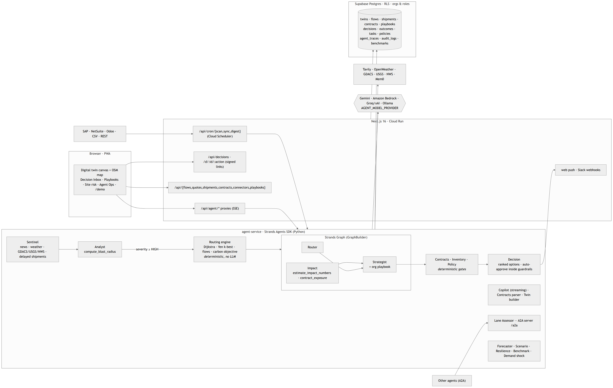

It watches your ports, suppliers and lanes 24/7. When something breaks it computes the blast radius, finds the cheapest viable reroute, drafts the mitigation — and pings you once, with the options ranked.
Built with the Strands Agents SDK · MIT · github.com/Prashant-thakur77/SupplyChain-AI
Port closures, strikes and typhoons don't wait for office hours.
Per incident, in spreadsheets: what does it hit, what do alternatives cost, who to call.
Control towers at companies with 5–50 suppliers. This is the gap.
Repetitive and judgement-heavy at the same time — exactly the pile a Professional Agent should clear.
SMB manufacturer or importer, 5–50 suppliers, multi-modal lanes, no control tower budget.
News alerts, a spreadsheet of lanes and costs, a phone. Reactive, slow, un-audited.
A Decision Inbox: approve / reject / snooze. A twin that shows the reroute. An audit trail.
Canvas builder or CSV/Excel import; nodes carry capacity, risk, coordinates; lanes carry mode, cost, days.
News + weather for every node and lane every 15 min, server-side (Cloud Scheduler).
Ranked options, recommendation, rationale, sources, confidence, trace drawer.
Failed node pulses, downstream tinted, candidate routes drawn in colour — click to pick.
"What if Suez is blocked?" — streaming answers with tool calls and exact numbers.
Simulation impact, strategy portfolio, 30-day forecast, live per-node risk — all typed agent outputs.
"Waiting 21 days is not viable when a 5-day reroute exists…" — Router
Approve → decision + audit log + notification + memory. Trace drawer shows Analyst 9.6 s · routing 0.0 s · Strands graph 13.4 s.

Next.js 16 (SSE proxies, Decision Inbox, cron) ↔ agent-service (Python · FastAPI · Strands) ↔ Supabase (RLS). Cloud Run today; the service already implements the Bedrock AgentCore runtime contract.
Every call uses structured_output_model (Pydantic). Large reports fall back to JSON mode + validation.
Incident: router ∥ impact → strategist. Analysis: intel → forecast ∥ scenario → strategy → report.
Blast radius, k-best reroutes, impact baseline, Tavily news, OpenWeather, Mem0 memory, persistence.
One agent_traces row per run; stream_async copilot; graph events streamed to the UI.
AGENT_MODEL_PROVIDER=gemini|bedrock. Key rotation → model fallback on 429/503.
Dijkstra, Yen k-shortest, lane detection, Monte Carlo cascade — unit-tested Python.
From event to a ranked, sourced decision.
Hallucinated routes or costs — the engine computes, the agent explains.
Of agent runs traced and auditable.
One avoided week of stock-out at a mid-size importer is worth more than years of the product. And the operator gets their evenings back.
github.com/Prashant-thakur77/SupplyChain-AI · MIT · Built with Strands Agents